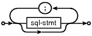
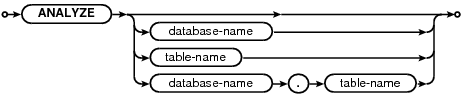
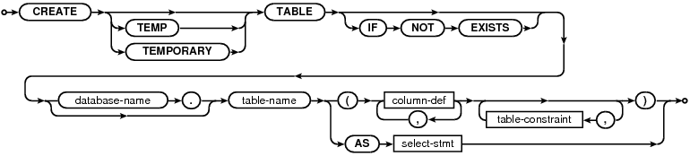
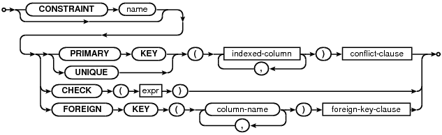
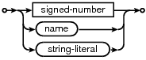
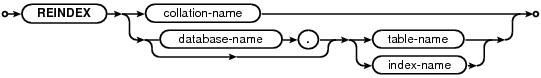
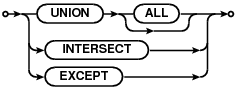

sql-stmt-list:
References: sql-stmt
See also: lang.html
sql-stmt:

Used by: sql-stmt-list
References: alter-table-stmt analyze-stmt attach-stmt begin-stmt commit-stmt create-index-stmt create-table-stmt create-trigger-stmt create-view-stmt create-virtual-table-stmt delete-stmt delete-stmt-limited detach-stmt drop-index-stmt drop-table-stmt drop-trigger-stmt drop-view-stmt insert-stmt pragma-stmt reindex-stmt release-stmt rollback-stmt savepoint-stmt select-stmt update-stmt update-stmt-limited vacuum-stmt
See also: lang.html lang_explain.html
alter-table-stmt:

Used by: sql-stmt
References: column-def
See also: lang_altertable.html
analyze-stmt:
Used by: sql-stmt
See also: lang_analyze.html
attach-stmt:

Used by: sql-stmt
See also: lang_attach.html
begin-stmt:

Used by: sql-stmt
See also: lang_transaction.html
commit-stmt:

Used by: sql-stmt
See also: lang_transaction.html
rollback-stmt:

Used by: sql-stmt
See also: lang_savepoint.html lang_transaction.html
savepoint-stmt:

Used by: sql-stmt
See also: lang_savepoint.html
release-stmt:
Used by: sql-stmt
See also: lang_savepoint.html
create-index-stmt:

Used by: sql-stmt
References: indexed-column
See also: lang_createindex.html
indexed-column:

Used by: create-index-stmt table-constraint
See also: lang_createindex.html
create-table-stmt:
Used by: sql-stmt
References: column-def select-stmt table-constraint
See also: lang_createtable.html
column-def:

Used by: alter-table-stmt create-table-stmt
References: column-constraint type-name
See also: datatype3.html#collation lang_altertable.html lang_createtable.html
type-name:

Used by: column-def expr
References: signed-number
See also: lang_createtable.html
column-constraint:

Used by: column-def
References: conflict-clause expr foreign-key-clause literal-value signed-number
See also: lang_createtable.html
signed-number:

Used by: column-constraint pragma-value type-name
See also: lang_expr.html
table-constraint:
Used by: create-table-stmt
References: conflict-clause expr foreign-key-clause indexed-column
See also: lang_createtable.html
foreign-key-clause:
Used by: column-constraint table-constraint
See also: lang_altertable.html lang_createtable.html
conflict-clause:

Used by: column-constraint table-constraint
See also: lang_conflict.html
create-trigger-stmt:

Used by: sql-stmt
References: delete-stmt expr insert-stmt select-stmt update-stmt
See also: lang_createtrigger.html
create-view-stmt:

Used by: sql-stmt
References: select-stmt
See also: lang_createview.html
create-virtual-table-stmt:

Used by: sql-stmt
See also: lang_createvtab.html
delete-stmt:

Used by: create-trigger-stmt sql-stmt
References: expr qualified-table-name
See also: lang_delete.html
delete-stmt-limited:

Used by: sql-stmt
References: expr ordering-term qualified-table-name
See also: lang_delete.html#trucateopt
detach-stmt:

Used by: sql-stmt
See also: lang_detach.html
drop-index-stmt:

Used by: sql-stmt
See also: lang_dropindex.html
drop-table-stmt:

Used by: sql-stmt
See also: lang_droptable.html
drop-trigger-stmt:

Used by: sql-stmt
See also: lang_droptrigger.html
drop-view-stmt:

Used by: sql-stmt
See also: lang_dropview.html
expr:
Used by: column-constraint create-trigger-stmt delete-stmt delete-stmt-limited insert-stmt join-constraint ordering-term result-column select-core table-constraint update-stmt update-stmt-limited
References: literal-value raise-function select-stmt type-name
See also: lang_expr.html
raise-function:

Used by: expr
See also: lang_createtrigger.html#undef_before lang_expr.html
literal-value:

Used by: column-constraint expr
See also: lang_expr.html
insert-stmt:

Used by: create-trigger-stmt sql-stmt
References: expr select-stmt
See also: lang_insert.html
pragma-stmt:
Used by: sql-stmt
References: pragma-value
See also: pragma.html#syntax
pragma-value:
Used by: pragma-stmt
References: signed-number
See also: pragma.html#syntax
reindex-stmt:
Used by: sql-stmt
See also: lang_reindex.html
select-stmt:

Used by: create-table-stmt create-trigger-stmt create-view-stmt expr insert-stmt single-source sql-stmt
References: compound-operator ordering-term select-core
See also: lang_select.html
select-core:

Used by: select-stmt
References: expr join-source ordering-term result-column
See also: lang_select.html
result-column:

Used by: select-core
References: expr
See also: lang_select.html
join-source:

Used by: select-core single-source
References: join-constraint join-op single-source
See also: lang_select.html
single-source:
Used by: join-source
References: join-source select-stmt
See also: lang_indexedby.html lang_select.html
join-op:

Used by: join-source
See also: lang_select.html
join-constraint:

Used by: join-source
References: expr
See also: lang_select.html
ordering-term:

Used by: delete-stmt-limited select-core select-stmt update-stmt-limited
References: expr
See also: lang_select.html
compound-operator:
Used by: select-stmt
See also: lang_select.html
update-stmt:

Used by: create-trigger-stmt sql-stmt
References: expr qualified-table-name
See also: lang_update.html
update-stmt-limited:

Used by: sql-stmt
References: expr ordering-term qualified-table-name
See also: lang_update.html
qualified-table-name:

Used by: delete-stmt delete-stmt-limited update-stmt update-stmt-limited
See also: lang_delete.html lang_indexedby.html lang_update.html
vacuum-stmt:

Used by: sql-stmt
See also: lang_vacuum.html
comment-syntax:
See also: lang_comment.html